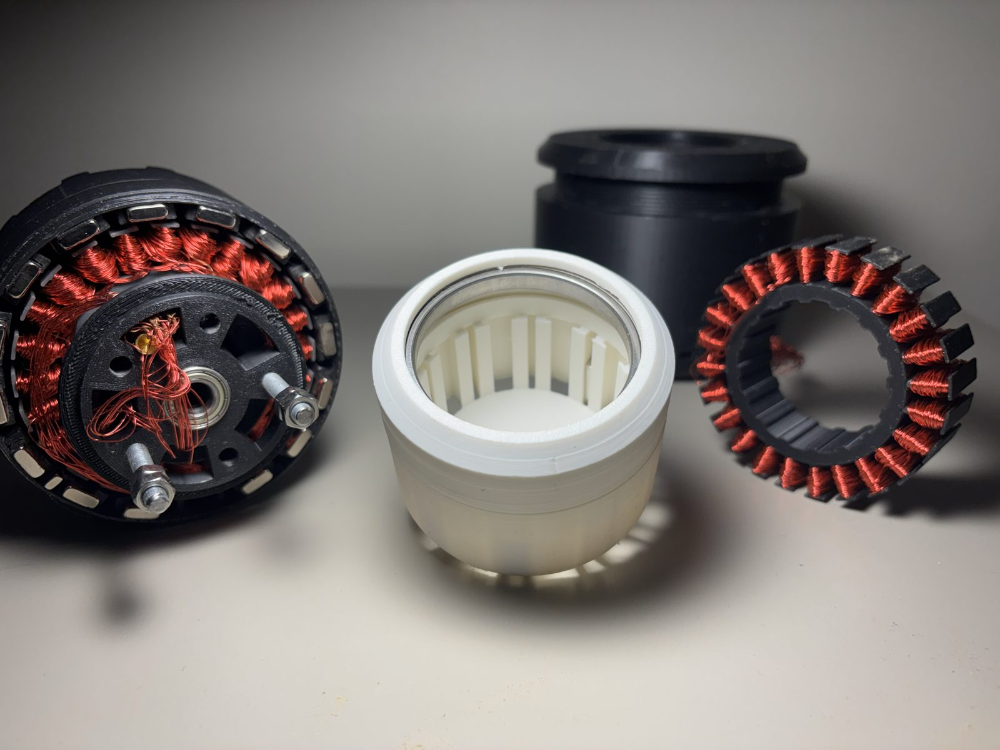
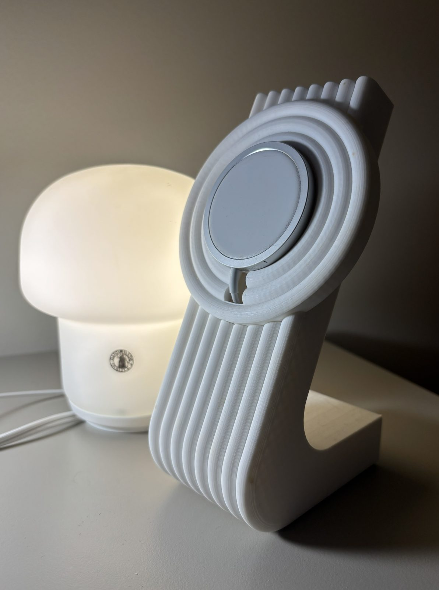

3D Printing & Fabrication
The hobby that became how I approach engineering.
3D printing started as a hobby, but it quickly became a foundation for how I approach engineering: iterate fast, prototype early, learn through building. As a college student with zero money, every print felt like I was "printing with diamonds," so each iteration had to count — design carefully, test on purpose, refine based on real results.

How I got into it
While studying at RIT, I kept hearing about Dr. Denis Cormier and the work at the AMPrintCenter. Dr. Cormier later guest-lectured in one of my classes, and he walked out with an unexpected addition: a lab assistant from Kazakhstan (me). I followed him to the lab, skipping my next class, and spent a year as a lab assistant and undergraduate student researcher.
A 3D-printed electric motor
I designed an electric motor from scratch, inspired by Christoph Laimer's work. Stator and rotor are printed; copper goes around the teeth by hand. The prototype runs — I have video — but it overheats quickly because several load-bearing parts are PLA and soften under temperature. The fix would be PETG or PA-CF for the structural pieces; I haven't redone the print yet.

Each piece took several iterations — wall thickness, overhang angle, the fits between the bearing seats. The picture below is one of the early arrangements on my desk.

Once it was assembled and balanced on the bearing, the shaft sticks out and you can spin it by hand. That's the point at which the prototype goes from "3D-printed thing" to "motor".

Iron Man MK7
After the print was complete, the helmet needed a few post-processing steps:
Step 1: Weld the parts.
Step 2: Sand the part to a smooth finish.
Step 3: Doubt if you sanded enough.
Step 4: Sand it more.
Step 5: Apply filler and primer (could be 2-in-1).
Step 6: Sand it. Repeat 5 and 6.
Step 7: Paint it.
Step 8: Apply a protective clear coat.
One thing I did not account for is that my head might be slightly above average size, so the MK7 helmet does not fit me. One way to make sure it'll fit you is to take measurements — but I do not have a measurement tape. After that you can motorise the helmet using small servo motors and hinges. I used SG90 motors because they're cheap and this is just a prototype. You can drive them with an Arduino. Jarvis Close the Mask!!! For the next one, I just scanned myself — future helmets will scale to the scan.
MagSafe stand for my wife
Noticed my wife had a 3D-printed stand in her YouTube feed. First thought was to buy it for her, but $69 plus tax is much more than $4 of PLA and 30 minutes in CAD.

The shape is a small homage to her lamp. It costs almost nothing and fits in like it's always been there.